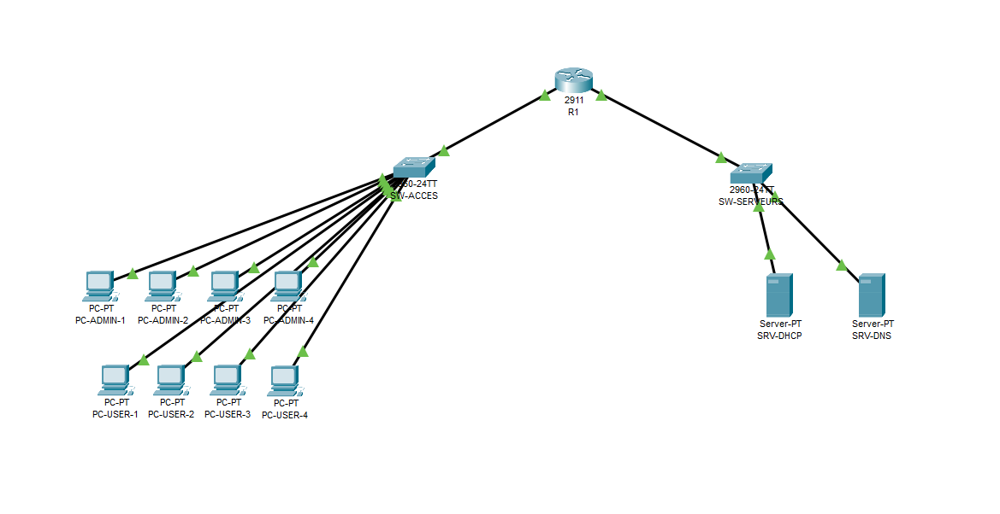
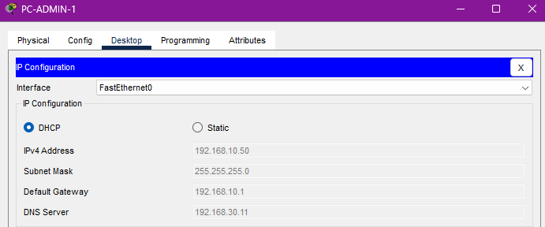
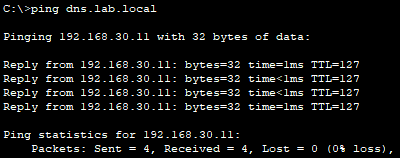
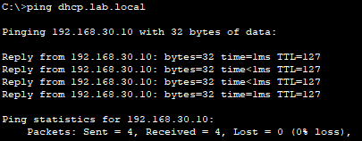

Concevoir des réseaux segmentés avant de les déployer
Maquettes d'architectures réseau sur Cisco Packet Tracer : segmentation par VLAN, routage inter-réseaux et distribution d'adresses par DHCP — pour valider une conception avant de toucher à la production.
01Contexte
Avant de câbler ou de configurer quoi que ce soit, un administrateur réseau conçoit et vérifie son architecture sur papier — ou mieux, en simulation. Packet Tracer me permet de construire des réseaux complets, de les casser volontairement et d'observer le comportement des protocoles.
Ces maquettes couvrent les briques classiques d'un réseau d'entreprise : segmentation par VLAN pour isoler les populations, routage pour les faire communiquer de façon contrôlée, et DHCP pour automatiser l'adressage.
02Architecture de référence

03Réalisation & validation
- Plan d'adressage : un sous-réseau par VLAN, adressage cohérent et documenté.
- Création des VLAN sur les switchs, affectation des ports en mode access et configuration des liens trunk 802.1Q vers le routeur.
- Routage inter-VLAN : sous-interfaces sur le routeur pour router entre segments de façon contrôlée.
- DHCP centralisé : pools par VLAN (plages .50 → .149) distribués depuis le VLAN serveurs — le routeur assure le relais DHCP (
ip helper-address) vers les sous-interfaces des VLAN 10 et 20. - Validation : tests
pingetipconfig— obtention des baux, communication inter-VLAN, résolution de noms, simulation de pannes pour observer le comportement.
04Preuves de validation
Trois captures issues des tests sur la maquette : le bail DHCP obtenu par un poste admin, puis deux pings par nom — la résolution DNS fonctionne et le TTL 127 prouve que le paquet a traversé le routeur inter-VLAN.


